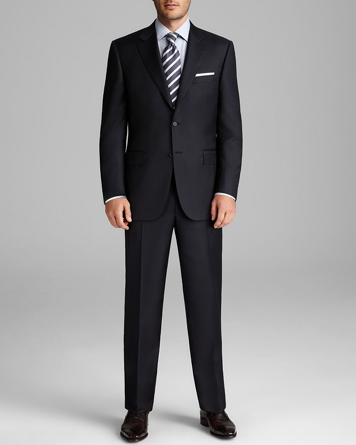
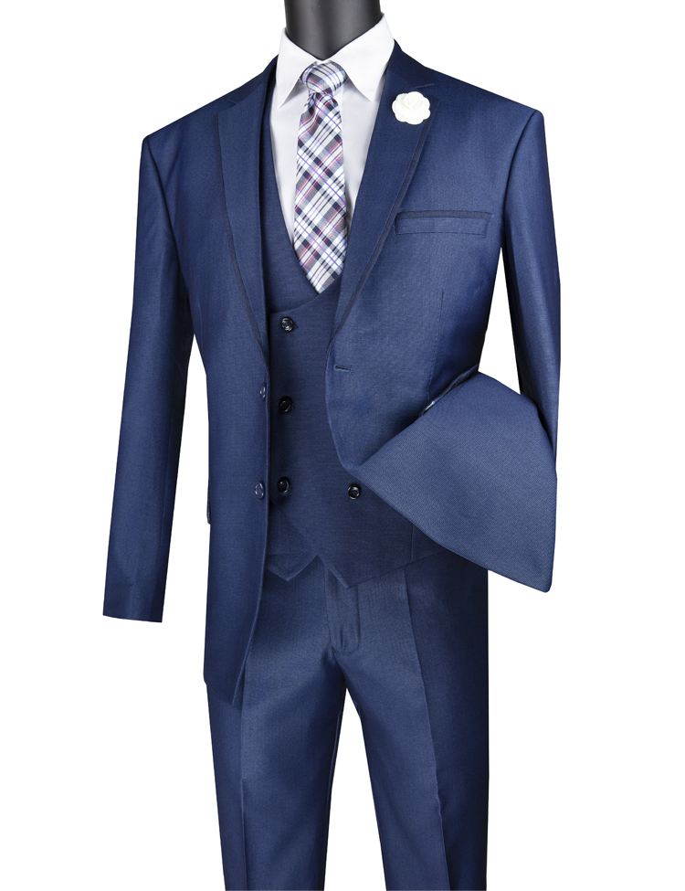
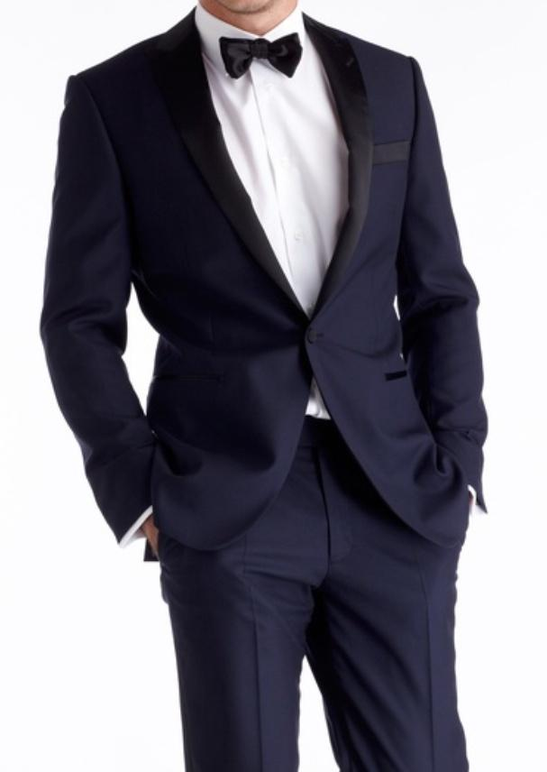
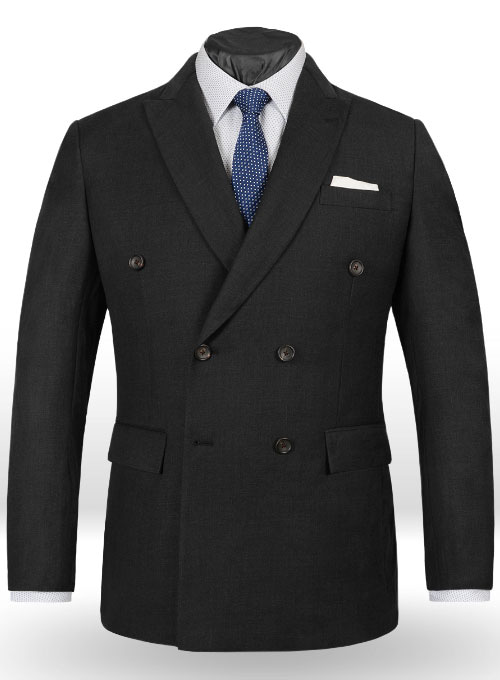

Types of Men's Suits, Styles and Details.
-

For those who don't want to overthink the process, a classic fit suit is a way to go. This type of suit for men is comfortable in feel and unfettered in design, this suit style provides breathability without resorting to a loose or unkempt aesthetic-they don-t call it "classic" for nothing. An easy choice if you want something that's perfect for the office Monday to Friday, but with a suit jacket that can be put with chinos for a smart casual weekend look. It's safe to say, classic suits will never go out of style.
-

If you don't think you can pull off the slim fit suit just yet, but want to exude a heightened sartorial sensibility, by all means, consider the modern fit suit. These types of suits for men hover squarely in the realm between slim fit and a classic fit. It thereby delivers a tight look with breathing room to spare. If you get the material and the accessories right then you can make this work for just about any occasion. Modern suit styles are made to conquer any outing, from casual to dressy.
-

One look at a shawl lapel and its smooth, uninterrupted lining, and you're already picturing an elegant black-tie affair. That's because this type of suit lapel is more or less exclusively found on formal wear like tuxedos and fancy dinner jackets. Entailed in the shawl lapel's aesthetic is a timeless sense of class and distinction. These lapels provide a welcoming complement to most men's formal wear styles.
-

Among types of men's suits, the single-breasted suit is the most ubiquitous. The easiest way to spot one is to look for the inclusion of either one, two or three buttons along the seam, or just observe what about 99% of professional men wear to work to every day. By virtue of the single row of buttons, a single-breasted suit usually exudes a narrower and tighter appearance. These suits are most frequently paired with notch lapels.